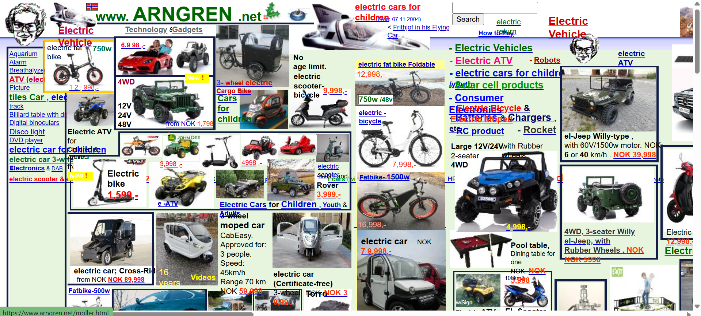

Lab Work
Lab 3.2 - Website Design Analysis
Bad Design
This website is an example of poor design. The reason KARZ Inc. unanimously agrees that this website is an example of poor design is that it violates 3 of the principles of Proper User Interface design. Firstly, it violates the consistency rule by having different layouts on different pages - when a link is clicked, the new page does not resemble the previous one, forcing the user to adapt to a new way of navigation. The ease of navigation principle is also violated because links are placed all over the website with no cohesion, and there are no back buttons. Lastly, the Universal Usability and Adaptability principle is violated: the page does not resize based on display size, the site is very busy with images and text tossed everywhere, text overlaps with images, and there is no alt text on images for the visually impaired.

Good Design
The McMaster website is a good example of a properly designed webpage. Our team agrees that this website is cohesive and well designed according to the 4 principles of Proper User Interface Design. The website is consistent across all pages with a persistent nav bar at the top and a similar layout throughout. The ease of navigation is well implemented - the nav bar allows you to navigate to other sections without going back to previous pages. Universal usability is also well followed: the page shrinks and expands based on display size, buttons reorient for smaller screens, and the site is neither cluttered nor too empty. The consistent McMaster colour scheme and clear visual hierarchy make it both aesthetically pleasing and easy to navigate.